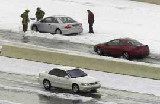
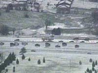
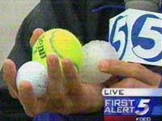
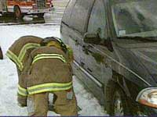
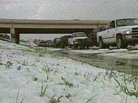

Wednesday, April 21, 2004
| We had some of that famous Oklahoma severe
weather on this day. Poor Eric had just arrived back from a trip to
Guatemala when he was caught in the worst of it on the highway. His
truck was beaten with golf ball sized hail and is dented beyond
belief. On my way home from work I drove through miles of what
looked exactly like snow but was accumulated hail. It was
amazing. I don't think any tornados touched down, but we had a lot
of excitement nonetheless. |
|
|
 |
 |
|
These are scenes of the hail accumulation on the Broadway Extension. I drove home this way. It had been in the 80's earlier that day. |
|
 |
 |
| Pictures of a hail stone and some comparison objects. These are about the size of the hail stones that ruined Eric's truck. |
I saw them trying to get this van unstuck from the snow. |
 |
It took a month to get Eric's truck fixed. You'd better believe we hide now if we even think it's going to hail! |
| More accumulation. I got these pictures from Channel 5 & NewsOK.com | |